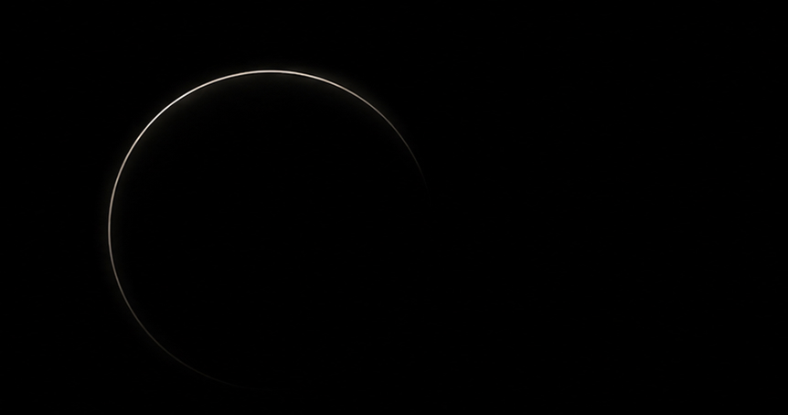
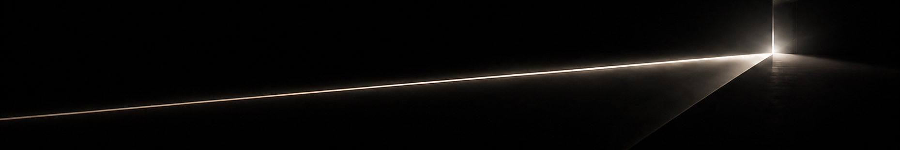
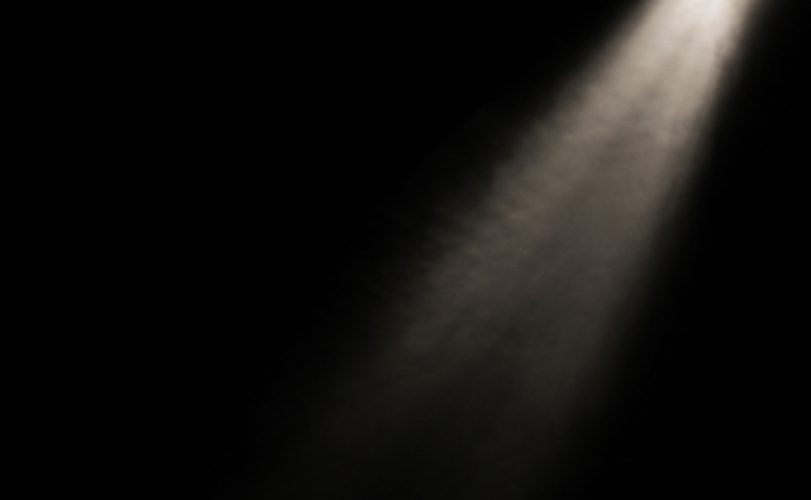
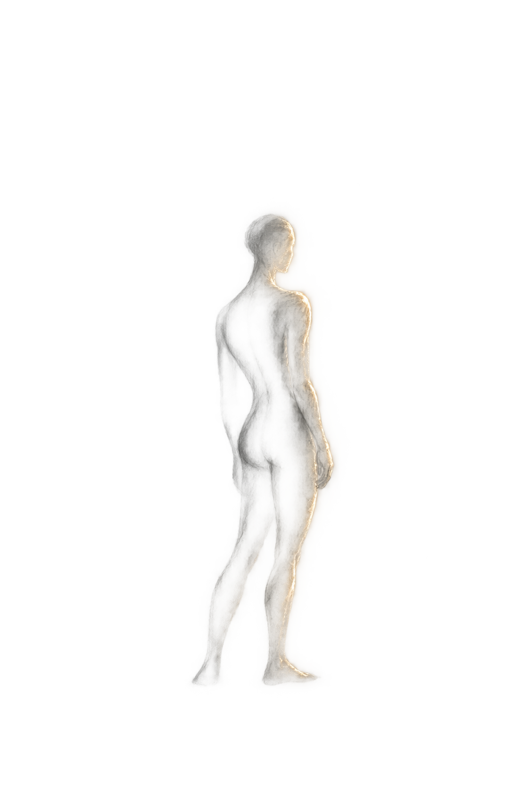

НИКИТИНАОКСАНА
СВЕТОДИЗАЙНЕРИССЛЕДОВАТЕЛЬ СВЕТОВОЙ СРЕДЫСвет как инструмент
эмоциональной архитектуры
эмоциональной архитектуры
Портфолио / 2026

01 / МанифестЯ ВЕРЮ, ЧТО
Я ВЕРЮ, ЧТО
СВЕТ СПОСОБЕН
МЕНЯТЬ НЕ ТОЛЬКО
ПРОСТРАНСТВО,
НО И ЧЕЛОВЕКА
ВНУТРИ НЕГО.
ДЛЯ МЕНЯ
СВЕТОДИЗАЙН
— ЭТО РАБОТА
С ВОСПРИЯТИЕМ
Меня особенно привлекает момент, когда свет перестаёт быть просто функцией и становится переживанием — влияет на состояние человека, направляет его внимание, меняет ощущение масштаба и глубины пространства.
Для этого важно понимать физику света, его взаимодействие с архитектурой, материалами и поверхностями — и использовать эти закономерности, чтобы создавать не просто освещение, а определённое состояние внутри пространства.